🏰 Pohádka
Vymyšlený příběh s kouzly, neurčitým místem a časem: Byl jednou jeden…, za devatero horami. Dobro vítězí nad zlem.
Pro 6. ročník: literární žánry, řecké báje a postavy pověstí.
Všechny čtyři žánry jsou staré příběhy, které se dlouho předávaly vyprávěním. Na první pohled si jsou podobné, ale každý má jiný účel a jiné znaky. Žánr poznáš, když si v ukázce všimneš, kdo v ní jedná a kde a kdy se děj odehrává.
Vymyšlený příběh s kouzly, neurčitým místem a časem: Byl jednou jeden…, za devatero horami. Dobro vítězí nad zlem.
Váže se ke skutečnému místu nebo osobě (Říp, Praha, rabi Löw) a tváří se, že se opravdu stala.
Vypráví o bozích a hrdinech a vysvětluje vznik světa a přírodních jevů – třeba odkud mají lidé oheň.
Zvířata jednají jako lidé (personifikace) a krátký příběh končí ponaučením.
Každý žánr odpovídá na jinou otázku. Pohádka: Kdy? – nikde a nikdy. Pověst: Kde? – tady u nás. Báje: Proč to tak je? Bajka: Co si z toho vezmu?
Pozor na časté záměny. Zvíře, které mluví, najdeš i v pohádce – bajka ale bývá krátká a míří k ponaučení (nevěř tomu, kdo ti lichotí). A hrdina se může objevit v pověsti i v báji: rozhoduje, jestli děj řídí bohové (báje), nebo je spojen se skutečným místem (pověst).
Urči žánr ukázky: Na půdě pražské Staronové synagogy prý dodnes leží golem, kterého stvořil rabi Löw.
✅ Pověst – váže se ke skutečnému místu a historické osobě.
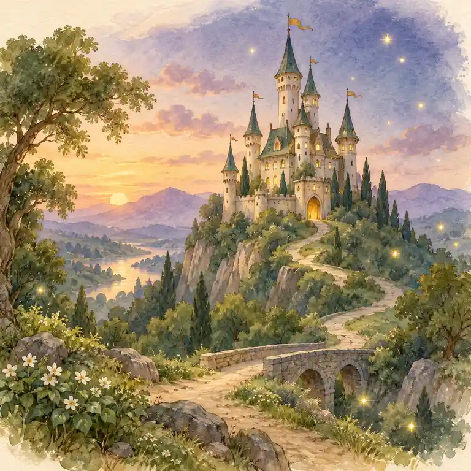
Vymyšlený příběh s kouzly, neurčitým místem a časem („Byl jednou jeden…“). Dobro vítězí nad zlem.
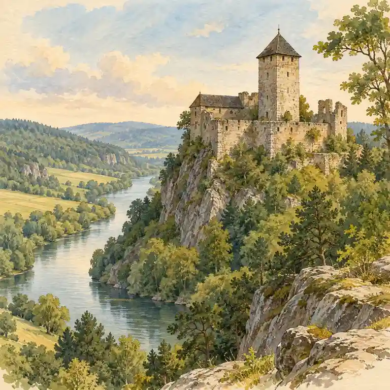
Váže se ke skutečnému místu nebo osobě (Říp, Praha, rabi Löw). Tváří se, že se to opravdu stalo.
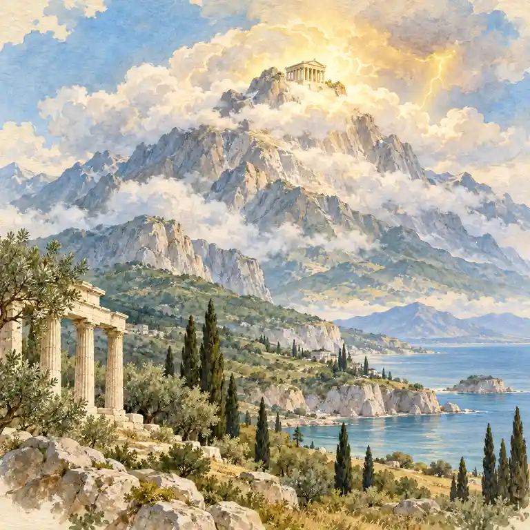
Vypráví o bozích a hrdinech a vysvětluje jimi vznik světa a přírodní jevy (blesk, oheň, roční období).
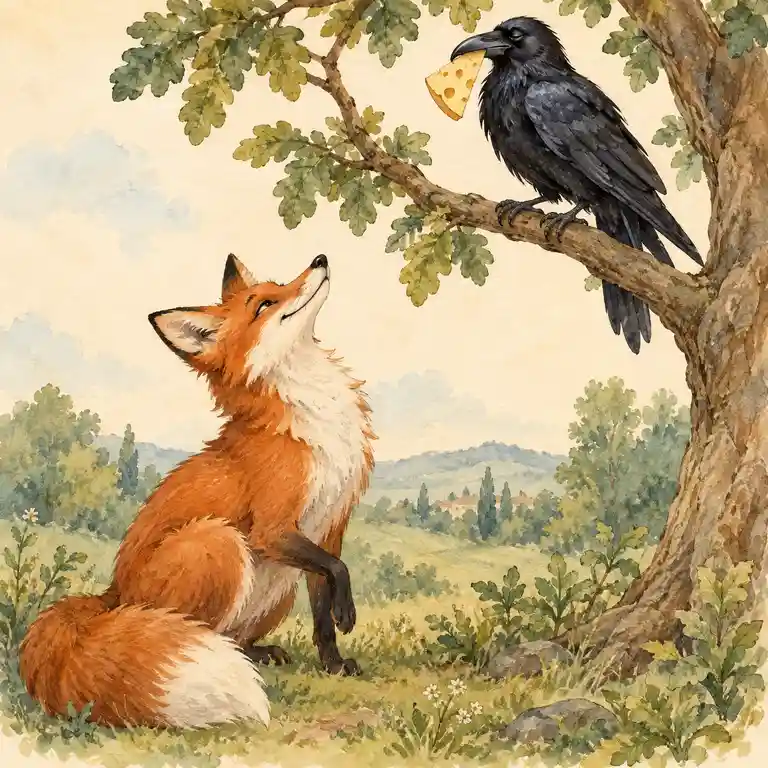
Zvířata jednají jako lidé (personifikace) a příběh končí ponaučením. Bývá krátká.
Postavy na vázách a sochách poznáváme podle jejich atributů. Prohlédni si skutečná antická díla a hledej předmět nebo zvíře, které postavu prozradí.
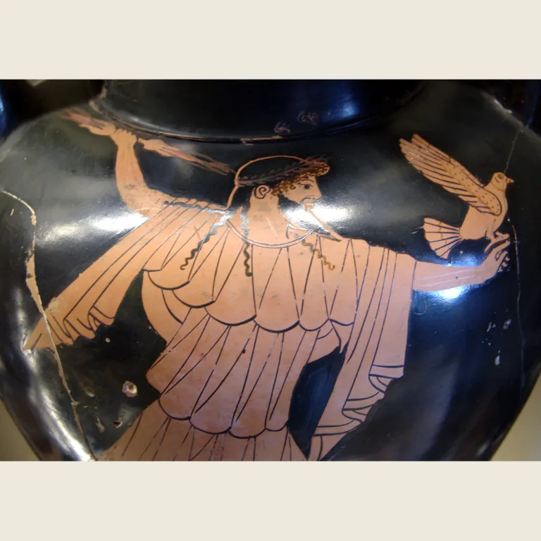
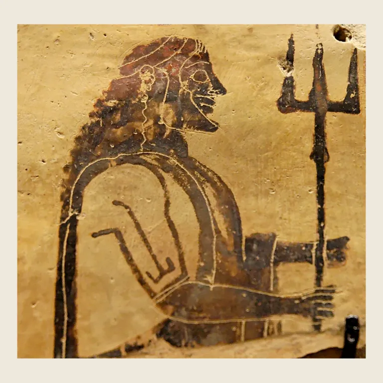
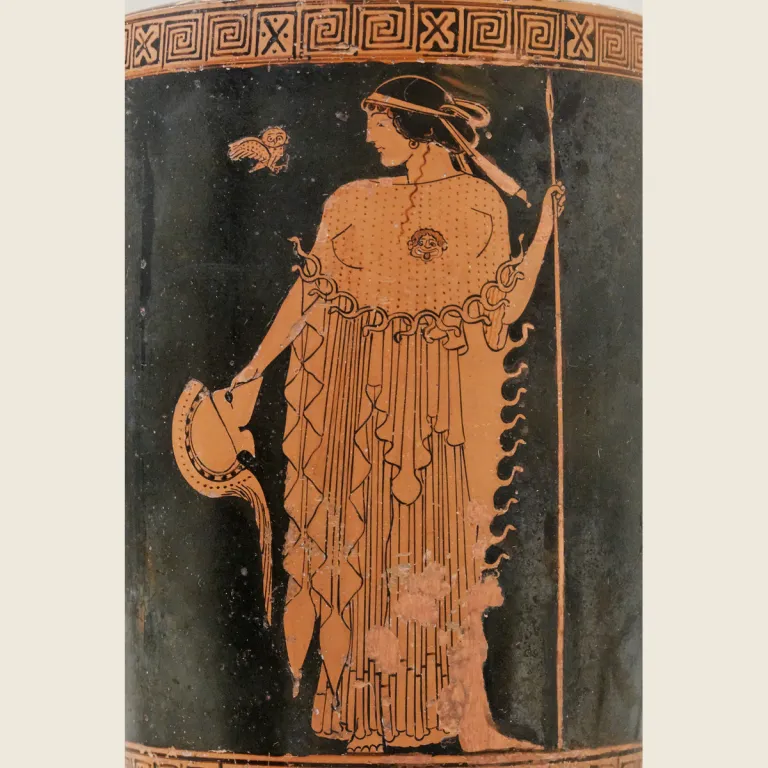
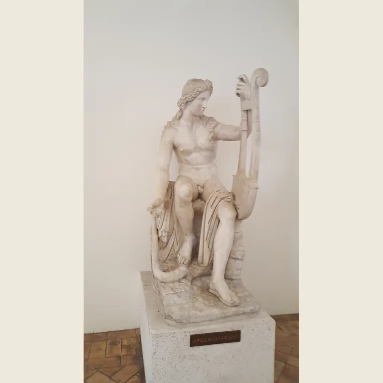
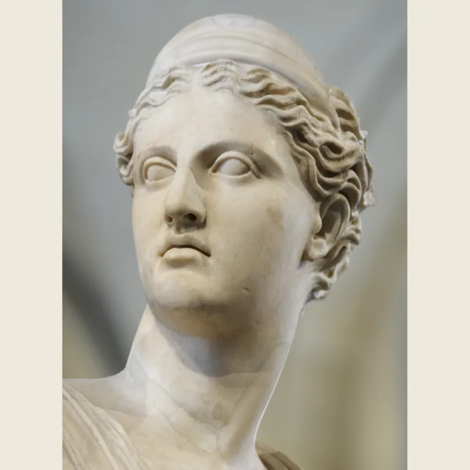
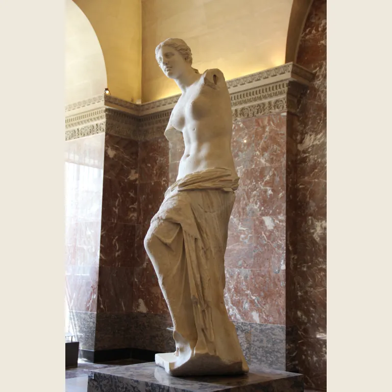
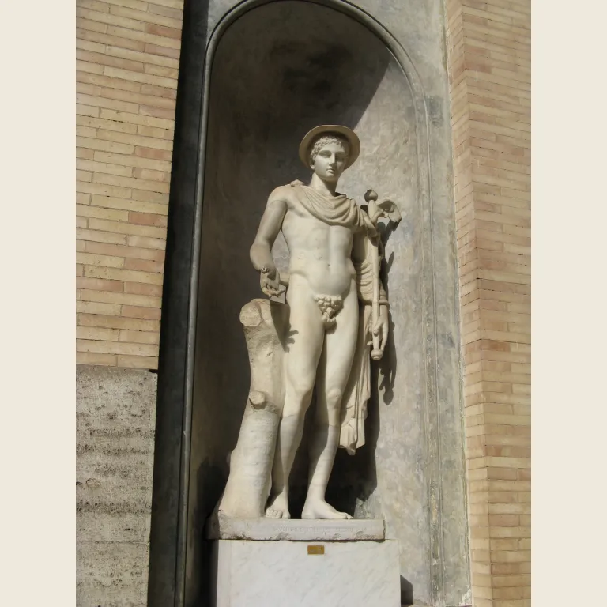
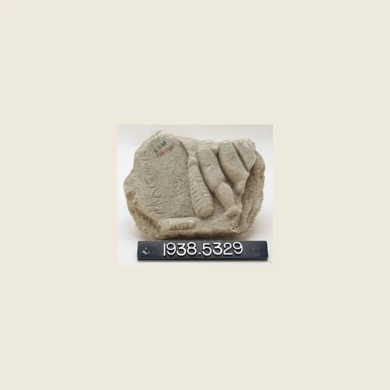
Nejsnazší rozlišení: zvířata s lidskou povahou → bajka · bohové → báje · skutečné místo → pověst · kouzla a „byl jednou jeden“ → pohádka. Klávesy: H nápověda · Enter další.